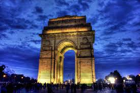

Delhi
Kerala is a popular destination for both domestic as well as foreign tourists. Kerala is well known for its beaches, backwaters in Alappuzha and Kollam, mountain ranges and wildlife sanctuaries. Other popular attractions in the state include the beaches at Kovalam, Muzhappilangad, Bekal and Kappad; backwater tourism and lake resorts around Ashtamudi Lake, Kollam; hill stations and resorts at Munnar, Wayanad, Nelliampathi, Vagamon and Ponmudi; and national parks and wildlife sanctuaries at Wayanad, Periyar, Parambikulam, Silent Valley National Park and Eravikulam National Park. The "backwaters" region—an extensive network of interlocking rivers, lakes, and canals that centre on Vembanad Lake, also see heavy tourist traffic. Heritage sites, such as the Padmanabhapuram Palace, Hill Palace, and Mattancherry Palace, are also visited.
Kerala

Santhome Church exhibits the Gothic revival architecture style of the late 19th century. It has a rib vault ceiling made of teak wood, with marble and granite used in other parts of the construction. It was built with 16 windows and 34 stained glass panels, with a main stained glass over the altar representing Thomas the Apostle touching the wound of Christ. The statue in the main altar represents "Thomas the Apostle as priest and Jesus Christ as king". In addition, there are 14 Stations of the Cross attached at the side wall of the cathedral.